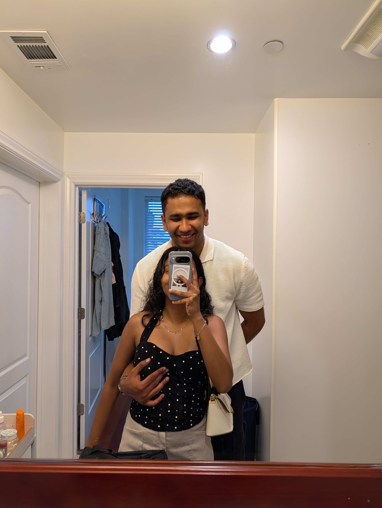

"every photo of you is my favourite one"


Month Twenty-Two · May 6, 2026
1 year & 10 months of choosing each other across the distance
scroll
an honest note first
days late · I know
I am not going to give reasons. I was supposed to have this for you on the 6th. It is the 11th. I'm sorry. Not the easy kind of sorry — the kind where I actually sat with the guilt of not showing up the way you deserve.

what I am working toward
May 11, 2026 · 22 months · 5 days late
22 months. And I'm still sitting here on the wrong side of the distance, writing this 5 days late, with my parents asleep in the next room, feeling the very specific guilt of someone who knows they owe you more than they've been giving lately.
I haven't been as present as I should be. I know that. You have been patient in a way that I don't think I fully deserve - and that patience isn't invisible to me. I see it. I feel it. And it makes me want to be better.
Here is what I want you to hold onto on the days it feels far and heavy: every single thing I am doing is pointed at you. The hard work, the long days, the waiting, the grinding — all of it has a direction. And that direction is you.
I am going to get to you. Not as a dream. As a plan. As the only thing that makes the rest of it worth it.
22 months down. The last stretch ahead. I'd do all of it again without blinking.